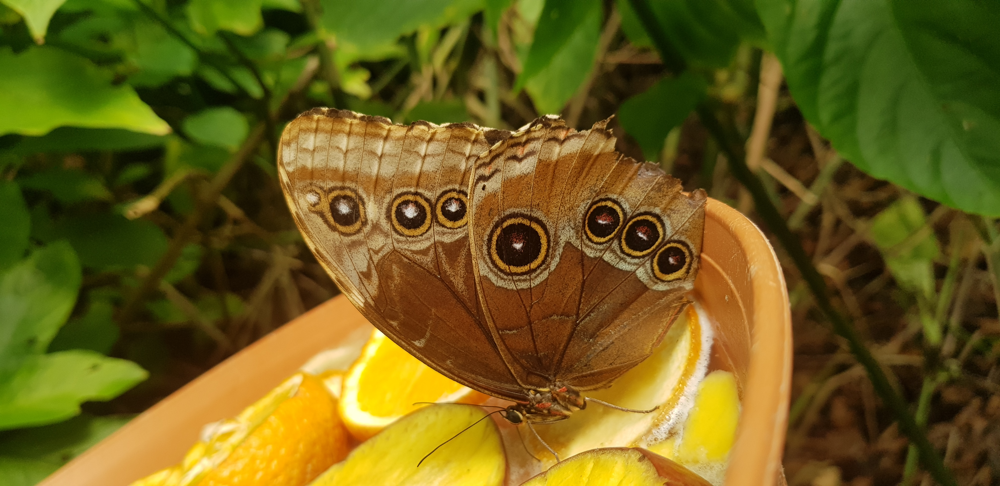
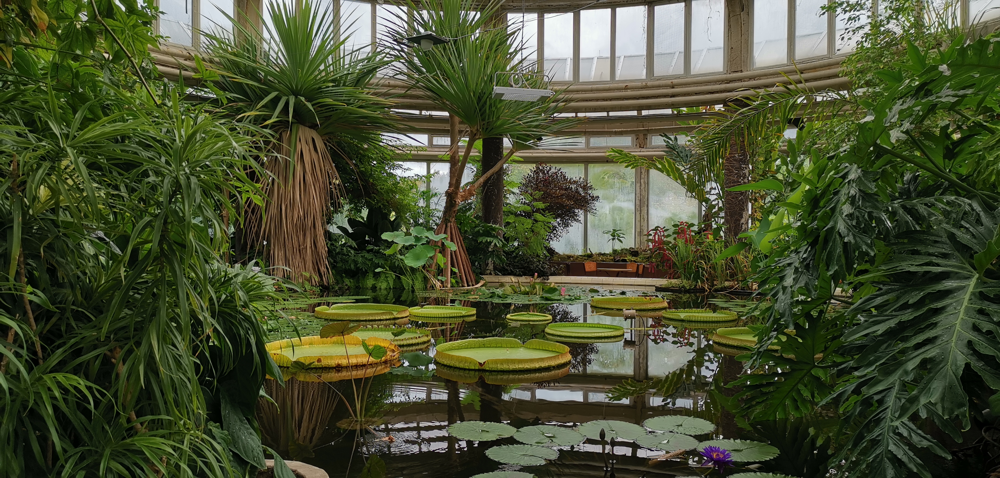
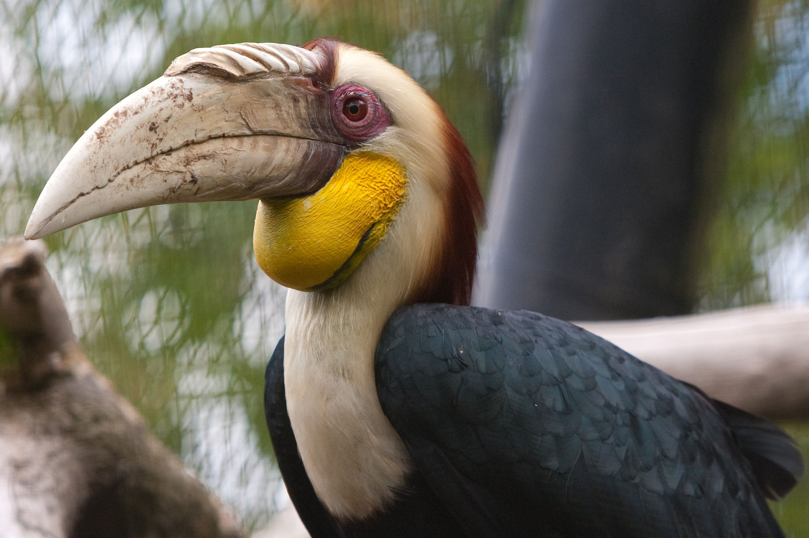

Dit is een vlinder uit het Amazonica verblijf, mede mogelijk gemaakt door giften van "De vrienden van Blijdorp".

De victoria-serre is één van de monumentale gebouwen binnen de dierentuin. Naast een grote hoeveelheid vogels vind je hier ook schitterende planten. In de serre is het warm en vochtig maar het is de perfecte plek om even een boterhammetje te eten.

Dit is een neushoornvogel, Hornbill in het engels, en de vliegen los in een groot verblijf in de Victoria-serre. Als bezoeker kan je door het verblijf heen lopen en stiekem stukjes fruit voeren. Wanneer je het fruit in de lucht gooit zullen ze het vangen. Pas wel op voor de "splash-zone". Het zijn zeer indrukwekkende vogels die veel kabaal maken wanneer ze vliegen. Ook hun roep is goed te horen.Terug naar boven.